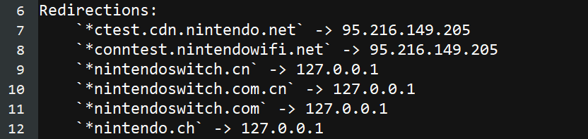

Bloquer les serveurs de Nintendo
Cette page vous aidera à mettre en place une méthode pour bloquer toute communication avec Nintendo. Cela permettra d’empêcher toutes les mises à jour et les rapports d'être envoyés à Nintendo, mais cela d’empêchera également l’utilisation de l’eShop et des jeux en ligne.
Instructions (redirection DNS AMS)
Vous pouvez configurer Atmosphère pour rediriger automatiquement toutes les demandes dirigées vers Nintendo vers "rien" à la place. La documentation sur cette fonctionnalité peut être trouvée ici. La section ci-dessous vous aidera à configurer la redirection DNS sur votre emummc. Notez que cela ne s’appliquera que lorsque vous utilisez un CFW.
Ce dont vous aurez besoin :
- emummc.txt
- Atmosphère 0.18.0 ou plus récent
Setup:
- Insérez votre carte SD dans votre PC
- Allez dans le dossier
atmosphere - S'il n'existe pas déjà, créez un dossier nommé
hosts - Copiez le fichier
emummc.txtdans ce dossierhosts- Si vous souhaitez appliquer la redirection DNS à sysmmc au lieu d’emummc, renommer le fichier en
sysmmc.txt
- Si vous souhaitez appliquer la redirection DNS à sysmmc au lieu d’emummc, renommer le fichier en
Tester la fonctionnalité
Vous pouvez vérifier le bon fonctionnement de la redirection DNS en démarrant votre emummc (ou sysmmc si vous avez appliqué la config à sys), et en éteignant la console après.
Un rapport sera généré dans sd:/atmosphere/logs appelé dns_mitm_startup.log. Si cela commence par ce qui suit, la redirection DNS est active

Instructions (90dns)
Vous pouvez ajouter un DNS personnalisé à votre connexion WiFi qui bloquera toute communication avec les serveurs de Nintendo. Nous allons utiliser 90DNS, un serveur DNS personnalisé géré par la communauté. Si vous préférez, vous pouvez exécuter votre propre serveur DNS en suivant les instructions sur ce répertoire GitLab.
Entrez dans les paramètres système de la console, puis passez à l’onglet Internet. De là :
Paramétrer un nouvelle connexion WiFi
Réseau WiFi sans mot de passe
Tous les réseaux WiFi n’ont pas besoin d’un mot de passe pour se connecter. Si votre réseau n’en utilise pas, vous pouvez utiliser l’option Configuration manuelle, située au bas de l’écran Paramètres Internet en dessous de tous les autres réseaux WiFi.
- Sélectionnez votre réseau WiFi à partir de la liste des réseaux disponibles.
- Entrez un mot de passe incorrect qui a une longueure de 8 caractères et appuyez sur
OK. - Après quelques instants de tentative de connexion, la console affichera une erreur de connexion.
- Fermez le message d'erreur.
- Appuyez sur
Fermerquand la console vous propose d'afficher plus de détails sur l'erreur. - Lorsque la console vous demande si vous souhaitez entrer un nouveau mot de passe, cliquez sur
Voir les paramètres de ce réseau. - Changez les paramètres DNS en
Mode Manuel. - Choisissez le serveur qui est le plus proche de votre emplacement géographique à partir du graphique ci-dessous et entrez son
DNS PrimaireetDNS Secondairedans les paramètres. - Entrez le mot de passe correct de votre connexion WiFi.
- Sauvegardez les paramètres et testez la connexion.
Paramétrer une connexion WiFi existante
- Sélectionnez votre réseau WiFi dans la liste des réseaux disponibles.
- Sélectionnez
Changer les paramètres. - Choisissez le serveur qui est le plus proche de votre emplacement géographique à partir du tableau ci-dessous et entrez son
DNS PrimaireetDNS Secondairedans les paramètres. - Sauvegardez les paramètres et testez la connexion.
Utiliser un homebrew pour mettre en place 90dns sur toutes les connections existantes
- Téléchargez switch-90dns-setter et placez le dans le dossier
switchde votre carte SD. - Lancez le CFW et ouvrez le menu homebrew.
- Lancez
90dns setter. - Appuyez sur X pour appliquer 90dns sur toutes les connections existantes.
- Appuyez sur Y pour redémarrer la console.
- Vérifiez dans les paramètres système que les connections possèdent bien des DNS personalisés.
| Lieu | DNS Primaire | DNS Secondaire |
|---|---|---|
| Europe (Serveur localisé en France) | 163.172.141.219 |
207.246.121.77 |
| Amérique (Serveur localisé aux USA) | 207.246.121.77 |
163.172.141.219 |
Exemple pour une connexion 90dns en France :

Tester si vous avez accès aux serveurs de Nintendo
Test via l'eShop (Stock)
- Ouvrez l’eShop. Attendez qu’il s’ouvre ou affiche une erreur
- Si une erreur apparait, vous devriez avoir réussi à bloquer Nintendo
Test via une application homebrew (CFW)
- Téléchargez la dernière version de 90dns Tester
- Placez le fichier
Switch_90DNS_tester.nrodans le dossierswitchsur votre carte SD - Entrez dans le menu homebrew et lancez 90dns Tester
- Une fois le test terminé, il devrait ressembler à l’image ci-dessous, avec chaque domaine
nintendobloqué (blocked)